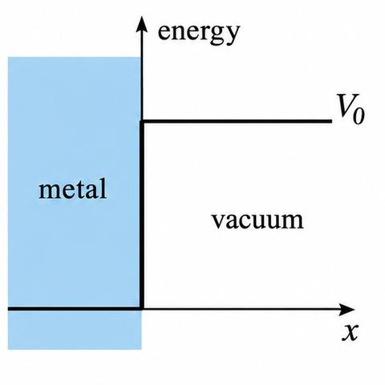
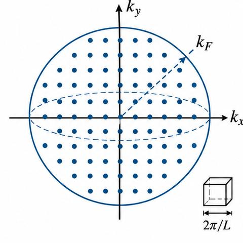
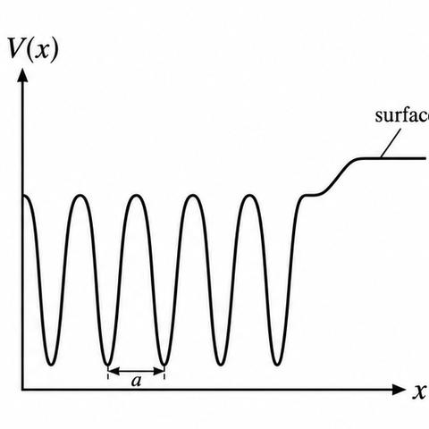
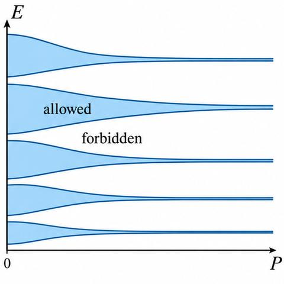
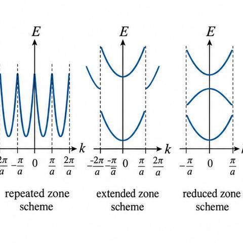
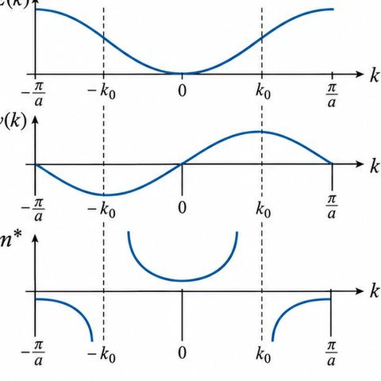
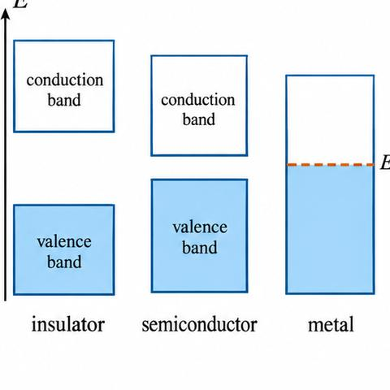

Structured notes: Module II: free electron theory and band theory
Puri and Babbar, Solid State Physics and Electronics, chapters 5 and 6 (printed pages 151–198). Text extracted by Codex from the page images and checked against them. Figures are redrawn for these notes, not copied from the book; the book figure number is in each caption. Problems are not included.
Section 1: Drude–Lorentz classical theory (Puri and Babbar 5.1)
5.1 Drude–Lorentz classical free electron theory (structured notes)
Source: book-sources/bs-3-free-electron-theory.html, Puri and Babbar pp. 151–152. Figure 5.1 is redrawn.
Before you start
Current density $J=nev_d$; Ohm's law (Plus Two recall below).
Maxwell–Boltzmann statistics as a classical distribution.
Plus Two recall: current and Ohm's law
Recall. $I=neAv_d$ and $V=IR$.
Re-derive.
$J=I/A=nev_d$.
With $E=V/\ell$ and drift proportional to $E$, $J=\sigma E$.
Saved. $J=\sigma E$.
5.1.1 Assumptions
Metal = positive ion cores + valence electrons. The ion-core potential is constant; electron–electron repulsion is neglected; the electrons form a free electron gas with the properties of a perfect gas. The gas is negatively charged and dense, and the electrons obey the Pauli principle. The potential energy inside the metal is zero, so the total energy is kinetic. A barrier $V_0$ at the surface confines the electrons (Fig. 5.1).

Fig. 5.1 (book): metallic surface bounded by the potential barrier V0, the difference in potential energy of an electron inside the metal and just outside it.
5.1.2 Statistics
Drude's perfect-gas picture and Lorentz's Maxwell–Boltzmann assumption (1909) define the Drude–Lorentz theory; the classical statistics give the name.
5.1.3 Successes
Ohm's law. Random motion gives no current; a field gives drift, limited by collisions with the ions. The steady current is proportional to $V$ at constant $T$.
High conductivity from free motion, and the Wiedemann–Franz ratio $\sigma/\kappa$ is the same for all metals at a given $T$ (realised in practice).
Lustre and opacity from absorption and re-emission by free electrons.
5.1.4 Failures
Resistivity predicted to vary as $T^{1/2}$; observed linear in $T$.
Heat capacity and paramagnetic susceptibility of conduction electrons too large (classical statistics give every electron energy).
Long mean free paths at low $T$ are not explained.
Fermi–Dirac statistics (Section 5.2) explain items 2 and 3 for the stated reason: only a fraction of the electrons can be excited.
Result
The classical theory gives Ohm's law and the Wiedemann–Franz ratio, and fails on heat capacity, susceptibility and the $T$-dependence of resistivity.
Summary
Potential box of depth $V_0$; Maxwell–Boltzmann statistics; successes and failures as above.
5.2 Sommerfeld's quantum theory: the one-dimensional free electron gas (structured notes)
Source: book-sources/bs-3-free-electron-theory.html, Puri and Babbar pp. 153–159. Equations 5.1 to 5.18 are cited by their book numbers. Figures are redrawn.
Before you start
Standing waves between fixed ends (box below).
Pauli exclusion principle; two spin states per spatial orbital.
Plus Two recall: standing waves between fixed ends
Recall. Standing waves on a string of length $L$ with fixed ends have $\lambda_n=2L/n$.
Re-derive.
Displacement $\propto\sin(n\pi x/L)$ satisfies the end conditions.
$k=n\pi/L$; with $p=\hbar k$ and $E=p^2/2m$, $E_n=\hbar^2n^2\pi^2/2mL^2$.
Fig. 5.2 (book): one-dimensional potential box bounded by infinite potential energy barriers.
Inside the box, (5.2) reduces to (5.3), with general solution (5.4) and $k$ from (5.5). The conditions (5.6) follow from the infinite walls: $\psi_n(0)=\psi_n(L)=0$. They give $B=0$ (5.7) and $k=n\pi/L$ (5.8), so $\psi_n=A\sin(n\pi x/L)$ (5.9) and
Section 3: three-dimensional free electron gas and applications (5.2.2, 5.3)
5.2.2–5.3 Free electron gas in three dimensions and its applications (structured notes)
Source: book-sources/bs-3-free-electron-theory.html, Puri and Babbar pp. 159–172. Equations 5.19 to 5.53 are cited by their book numbers. Figures are redrawn.
Number of $\mathbf k$-points in the sphere: $\tfrac43\pi k^3/(2\pi/L)^3$.
Times 2 for spin: $\tfrac{L^3}{3\pi^2}k^3$ (Eq. 5.34).
Saved. Eq. (5.34).
5.2.2 Three-dimensional box
Schrödinger equation (5.19) in a cube of edge $L$; standing-wave solution (5.20), with travelling-wave form $\psi_{\mathbf k}=Ae^{i\mathbf k\cdot\mathbf r}$ (5.21). Periodic boundary conditions (5.23) fix
with $k^2=2mE_k/\hbar^2$ (5.22) and $E_k=(\hbar^2/2m)(k_x^2+k_y^2+k_z^2)$ (5.25). Normalised wave function (5.27): $\psi_{\mathbf k}=L^{-3/2}e^{i\mathbf k\cdot\mathbf r}$. The state is labelled by $k_x,k_y,k_z,m_s$.

Fig. 5.8 (book): sphere of radius kF in k-space containing the occupied states of N free electrons in the ground state.
5.2.2.1 Filling of levels; Fermi sphere
At 0 K the occupied states fill a sphere of radius $k_F$ (Fig. 5.8). Counting (5.34): $\frac{L^3}{3\pi^2}k_F^3=N$. Then
Fig. 5.7 (book): Fermi distribution function at different temperatures; the variation of the Fermi energy with temperature is also shown.
At 0 K: step function (5.29). At $E_F$: $f=\tfrac12$. Shift of $E_F$ with $T$ (5.30): $E_F\cong E_{F_0}[1-(\pi^2/12)(k_BT/E_{F_0})^2]$. Only $\sim k_BT$ near $E_F$ is affected.
Average kinetic energy: $E_0=\frac1N\int_0^{E_{F0}}E\,D(E)\,dE=\tfrac35E_{F0}$.
$$E_0=\tfrac35E_{F0}$$
5.3 Applications
5.3.1 Electronic specific heat
Classical: $E=\tfrac32Nk_BT$, $C_V=\tfrac32Nk_B$ (5.49–5.50), about $3$ cal g-atom$^{-1}$K$^{-1}$ electronic, contrary to observation (electronic part at most 1% at room temperature). Quantum: only electrons within $k_BT$ of $E_F$ contribute, a fraction $T/T_F$; the printed result is
Proportional to $T$; zero at $T=0$; with $T=300$ K and $T_F=3000$ K, about 0.01 of the classical value.
5.3.2 Examples 5.1 and 5.2 (book)
Example 5.1: sodium, $r=1.86$ Å, bcc, $N/V=2.52\times10^{28}$ m$^{-3}$, $E_{F0}=3.11$ eV. Example 5.2: $P=\tfrac25NE_{F0}/V$ (5.53) and the pressure–volume law (5.52); $B=\tfrac53P$.
Plus Two recall: constructive reflection from periodic planes
Recall. Reflection from periodic planes is constructive when the path difference equals $n\lambda$.
Re-derive.
At normal incidence the condition is $n\lambda=2a$.
With $k=2\pi/\lambda$, this is $k=n\pi/a$.
Saved. Eqs. (6.41)–(6.42).
6.1 Introduction
The constant-potential model fails for conductors versus insulators, the resistivity of insulators and semiconductors. The periodic potential of the ion cores (period $a$, Fig. 6.1) gives two results: (a) allowed bands separated by gaps; (b) $E(\mathbf k)$ periodic in $\mathbf k$.

Fig. 6.1 (book): one-dimensional periodic potential experienced by an electron in a crystal with lattice constant a; the potential near the surface is at the right.
Proof: the general solution is $Af(x)+Bg(x)$ (6.6); the translated functions are combinations (6.7); the eigenvalue condition (6.9–6.12); the Wronskian gives $\alpha_1\beta_2-\alpha_2\beta_1=1$ (6.13); so $\lambda^2-(\alpha_1+\beta_2)\lambda+1=0$ (6.14).
Case I $(\alpha_1+\beta_2)^2\lt 4$: $\lambda=e^{\pm ika}$ (6.15), $\psi(x+a)=e^{ika}\psi(x)$ (6.17): the Bloch property; bounded; allowed bands. Case II $(\alpha_1+\beta_2)^2>4$: $\lambda=e^{\pm\mu a}$ (6.18), unbounded; forbidden gaps.
Fig. 6.3 (book): left-hand side of Eq. (6.39) against αa for P = 3π/2; solid and broken lines on the axis are the allowed and forbidden regions.
Allowed where the left side lies in $[-1,1]$ (Fig. 6.3, $P=3\pi/2$). Bands widen with energy and narrow with $P$. $P\to\infty$: $\alpha a=\pm n\pi$ (box levels). $P\to0$: $\alpha=k$ (free electrons). Figure 6.4 shows the spectrum against $P$.

Fig. 6.4 (book): allowed (shaded) and forbidden (open) energy ranges as a function of P.
6.3.1 Zone schemes
Repeated zone; extended zone with discontinuities at $k=\pm n\pi/a$ (6.41), which give $n\lambda=2a$ (6.42); reduced zone with $k=k'-G$ (6.43).

Fig. 6.5 (book): E versus k in three zone schemes: (a) repeated, (b) extended, (c) reduced.
6.3.2 States per band
$e^{ikL}=1$ gives $k=2\pi n/L$ (6.45–6.46); $dn=(L/2\pi)dk$ (6.47). The first zone holds $N$ states, so each band holds $N$ states and $2N$ electrons.
Result
Bloch functions (6.4), bands and gaps (6.15–6.18), Kronig–Penney condition (6.39), $N$ states per band (6.47).
Summary
Bands and gaps from periodicity; (6.4), (6.39), (6.41), (6.47).
Book equations of this section not shown in the derivation above
Listed with their book numbers, as printed (from the verified transcription).
Free electrons: $v\propto k$. In a band: $v=0$ at $k=0$ and $k=\pm\pi/a$; maximum at the inflexion $k_0$; falls beyond it (Fig. 6.6b).

Fig. 6.6 (book): energy, velocity and effective mass as functions of k; dashed lines mark the inflexion points.
6.4.2 Effective mass
Crystal momentum rate of change equals the force (6.52). Acceleration (6.53), free electron (6.54), so
$$m^*=\frac{\hbar^2}{d^2E/dk^2}\tag{6.55}$$
Positive in the lower half of the band, negative in the upper, infinite at inflexion points (Fig. 6.6c). Negative mass from Bragg reflection. Factor $f_k=m/m^*$ (6.56). Holes: positive charge and mass carriers in a nearly full band.
$N_{\text{eff}}=0$ for a full band; maximum at the inflexion point.

Fig. 6.8 (book): electron distribution at 0 K in (a) an insulator, (b) an intrinsic semiconductor and (c) a metal.
Insulator: wide gap (diamond about 6 eV). Intrinsic semiconductor: narrow gap (about 1 eV, Ge and Si); insulator at 0 K; conductivity rises with $T$. Metal: partly filled band; conductivity falls with $T$ (phonon scattering).
Examples 6.1 and 6.2 (book)
Example 6.1: lowest band energy $E\approx\pi^2\hbar^2/2ma^2$ for $P\ll1$ (as printed). Example 6.2: hole effective mass $+5.5\times10^{-30}$ kg, hole momentum $-1.05\times10^{-24}$ kg m s$^{-1}$, hole energy $10^{-19}$ J.